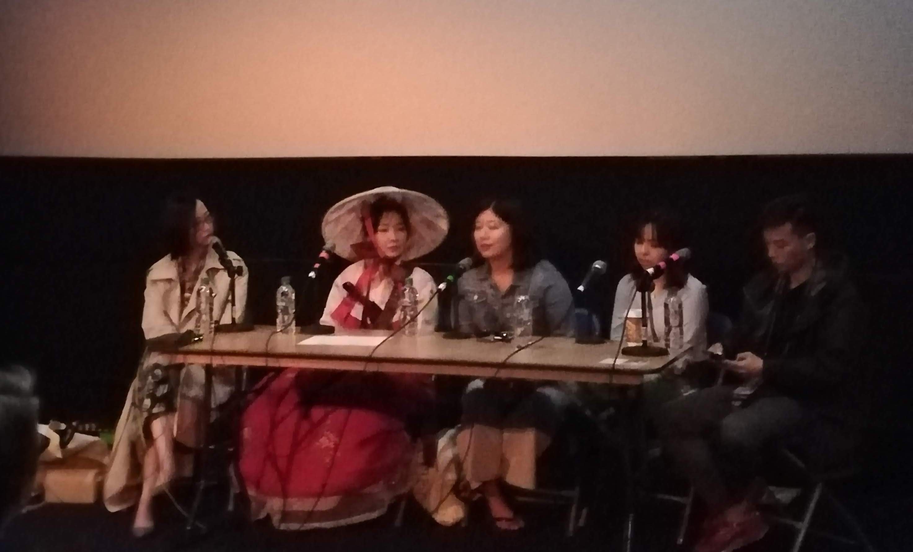
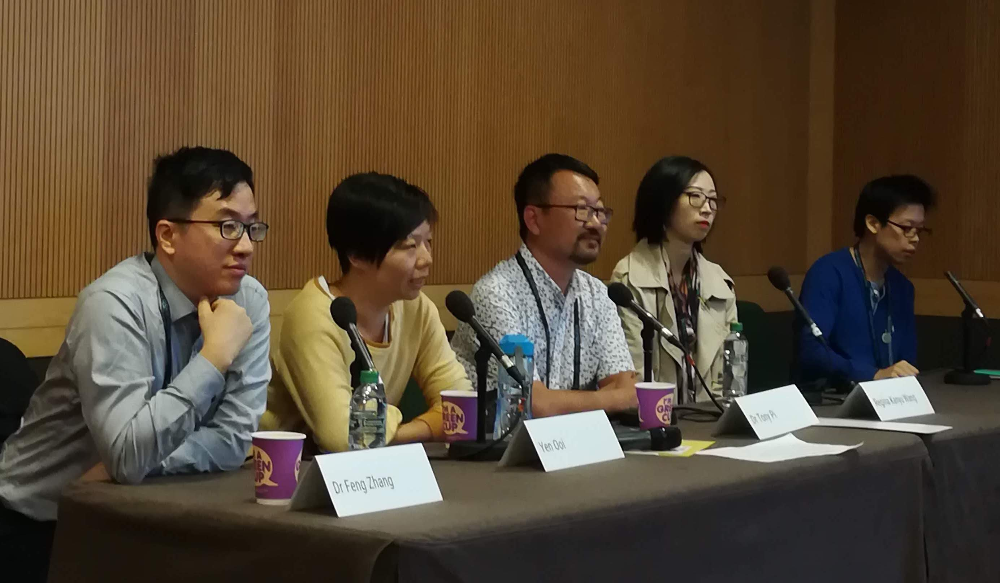
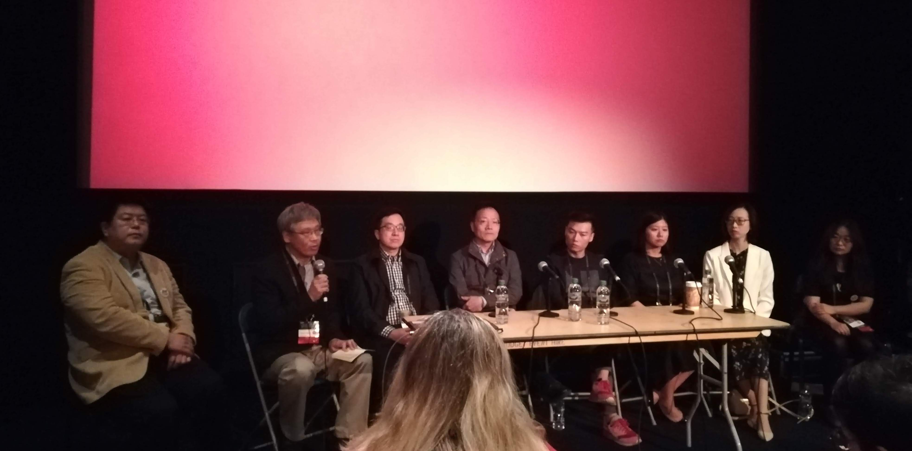
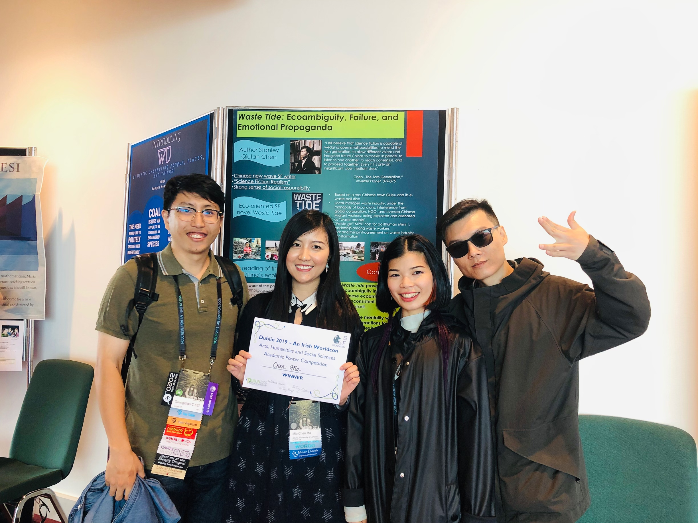
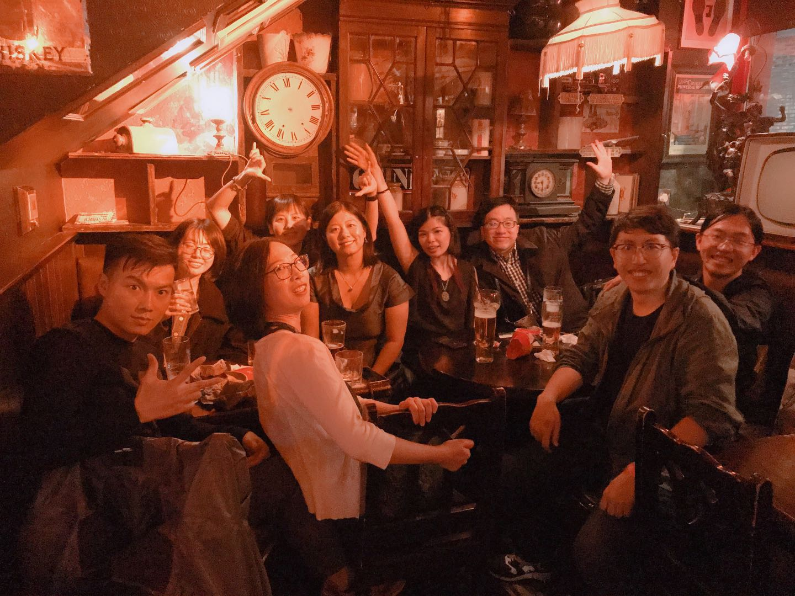

LCSFG goes to Dublin 2019 WorldCon
We headed to WorldCon 77 and connected with the global SF community
15th - 19th August 2019
 In the same week as our author event with Chen Qiufan, a few of us reunited in Dublin for WorldCon 77 and connected with the global SF community.
In the same week as our author event with Chen Qiufan, a few of us reunited in Dublin for WorldCon 77 and connected with the global SF community.
A highlight included Jeannette Ng's powerful acceptance speech at the Hugo Awards, as she articulately addressed the problematic impact of colonial legacies that are still celebrated in the SF community, whilst also championing the strength Hong Kongers as they marched that week - you can read it here.
There were many exciting panel discussions on Chinese science fiction with authors, translators and scholars, who are at the forefront of shaping today's genre. These included, Introduction to Silkpunk 丝绸朋克入门, 
Exploring Chinese science fiction 发现中国科幻, 
Global perspectives on Chinese science fiction 中国科幻的全球视角 and more. 
The bid for a WorldCon in Chengdu, China in 2023 was underway too at the Fan Tables.
 Our group's Ma Chan (PhD, SOAS) won first place in the Academic Posters Competition, with her piece "Waste Tide: Ecoambiguity, Failure, and Emotional Propaganda". Congratulations!

We've met many people from across the world, and we're glad to have you join us in the network!